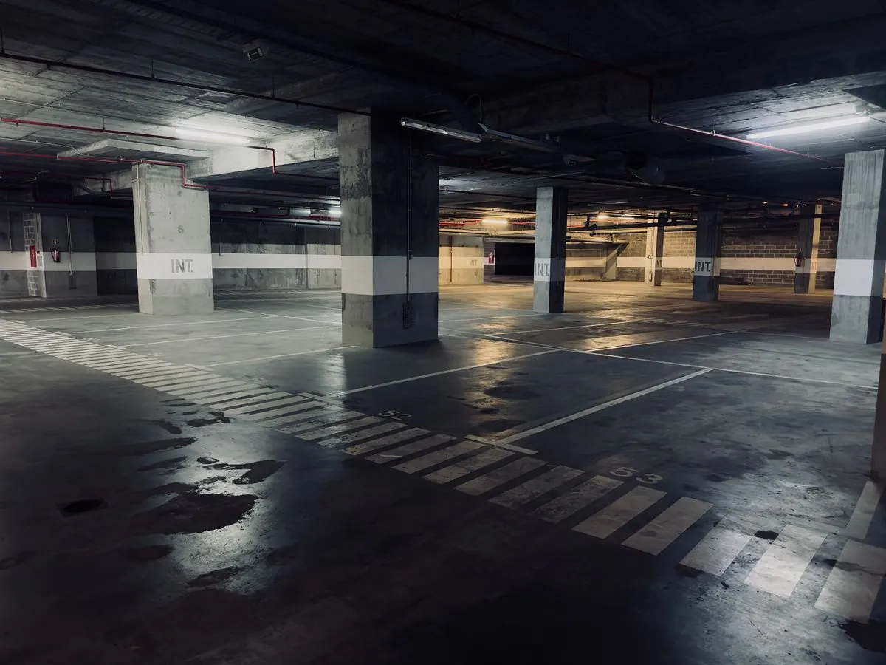

Send your project details below. We serve Sioux Falls, Tea, Brandon, Harrisburg, and the surrounding metro. Office hours are Monday through Friday, 8:00 AM to 6:00 PM.
We ask a few quick questions — garage, basement, or shop, approximate square footage, and current floor condition — then schedule a free on-site visit. We measure, check the slab for cracks and moisture, and give you a firm price before any work starts. No inflated phone quote that changes once we show up.
We are not taking new service requests at this time. Thank you for your interest.
Serving Sioux Falls, Tea, Brandon, Harrisburg, and the greater Sioux Falls, SD metro.
Hours: Monday – Friday, 8:00 AM – 6:00 PM
